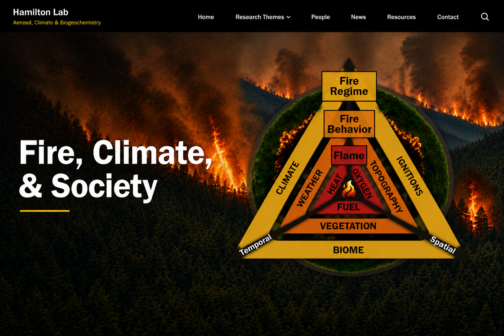

‹ Research ThemesWe study fire across the fire regime—from ignitions to emissions—and its interactions with climate, vegetation, atmospheric chemistry, and society. Our work integrates field observations, remote sensing, laboratory analyses, modelling, and data science to understand how wildfires influence and are influenced by the Earth System.
Selected Papers Across the Fire Theme
Climate Models Underestimate Preindustrial Fire Emissions
Reassessing preindustrial fire emissions and their implications for aerosol forcing and Earth System change.
Read paper →The Impacts of Post-Fire Dust on Ocean Biogeochemistry
Highlighting how wildfire impacts can extend beyond smoke through post-fire dust, nutrient deposition, and ocean biogeochemical responses.
Read paper →Fire Emissions and Aerosol Forcing
Global warming may increase fire emissions, but the resulting aerosol forcing remains uncertain.
Read preprint →Fire-Driven Ocean Fertilization
Future climate-driven fires may boost productivity in the iron-limited North Atlantic.
Read paper →HTAP3 Fires and Future Impacts
A multi-model, multi-pollutant framework for assessing fire impacts on air quality, climate, and health.
Read paper →Applications & Impact
Our fire research connects fundamental Earth System science to practical questions about climate risk, air quality, ecosystem response, and decision-making in fire-prone landscapes. We use observations, models, laboratory data, and visualization tools to understand how fires affect the atmosphere, oceans, ecosystems, and communities across spatial and temporal scales.
- Climate assessments: constraining historical and preindustrial fire emissions and their role in aerosol forcing.
- Earth System models: improving representations of smoke, dust, deposition, and aerosol optical properties.
- Ocean biogeochemistry: linking fire-driven nutrient deposition to marine productivity and carbon cycling.
- Air quality and health: evaluating multi-pollutant smoke exposure, regional air quality, and future health-relevant impacts.
- Land and fire management: supporting prescribed-fire planning, risk communication, and policy-relevant fire science.
- Education and visualization: communicating wildfire processes through data visualization, science communication, and immersive tools.